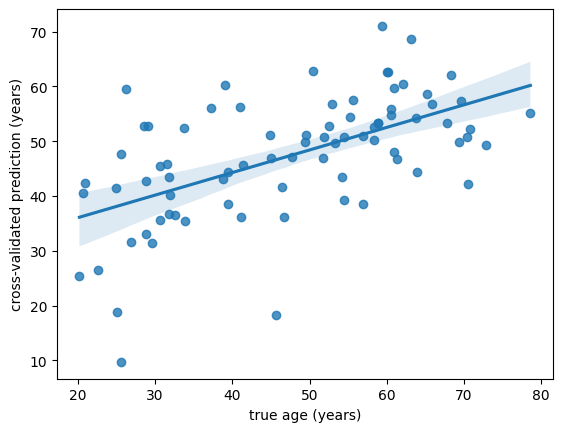
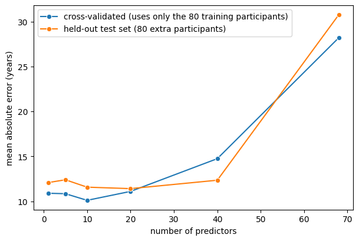

Cross-validation#
On the previous page we bought an honest performance estimate by setting 80 participants aside. It worked, but the price was steep: those 80 people contributed nothing to the model, and all we got in return was a single number.
Cross-validation is the idea that lets us use nearly all the data for training and still get an honest estimate of how well we predict. You can have your cake and eat it — at the cost of one extra assumption, which we will make explicit, and of a residual bias that we will measure rather than wish away.
The idea#
Instead of building one model and testing it once, we build several models, each leaving out a different small part of the data, and test each one on the part it did not see. Every participant is used for testing exactly once, and for training in all the other rounds.
The extra assumption is this: the models built in the different rounds are similar enough to each other to be treated as members of one family. What we then estimate is the predictive performance of that family — “a model of this type, fitted to this much data of this kind” — rather than of one specific fitted model. For almost every purpose this is what we actually want to know.
Leave-one-out cross-validation#
The simplest scheme is leave-one-out (LOO): as many rounds as there are participants, each holding out a single person.

Fig. 3 Leave-one-out cross-validation (Source: Wikipedia, user: MBanuelos22, unmodified, CC BY-SA 4.0).#
#/media/File:LOOCV.gif){kind=link}
In plain python it is a single loop:
import numpy as np
import pandas as pd
import seaborn as sns
import matplotlib.pyplot as plt
subjects = np.array(['a', 'b', 'c', 'd', 'e', 'f'])
indices = np.arange(len(subjects))
for i in indices:
print(f'round {i}: train on {subjects[indices != i]} test on {subjects[indices == i]}')
round 0: train on ['b' 'c' 'd' 'e' 'f'] test on ['a']
round 1: train on ['a' 'c' 'd' 'e' 'f'] test on ['b']
round 2: train on ['a' 'b' 'd' 'e' 'f'] test on ['c']
round 3: train on ['a' 'b' 'c' 'e' 'f'] test on ['d']
round 4: train on ['a' 'b' 'c' 'd' 'f'] test on ['e']
round 5: train on ['a' 'b' 'c' 'd' 'e'] test on ['f']
Scikit-learn provides this as
LeaveOneOut,
which hands you the row indices for each round:
from sklearn.model_selection import LeaveOneOut
cv = LeaveOneOut()
print('train_index', 'test_index', sep='\t')
for train_index, test_index in cv.split(subjects):
print(train_index, test_index, sep='\t')
train_index test_index
[1 2 3 4 5] [0]
[0 2 3 4 5] [1]
[0 1 3 4 5] [2]
[0 1 2 4 5] [3]
[0 1 2 3 5] [4]
[0 1 2 3 4] [5]
K-fold cross-validation#
LOO uses as much data for training as possible, which makes it a common choice for very small datasets. It has drawbacks, though:
you fit as many models as you have participants, which is slow for large data or expensive models;
you learn nothing about how consistently the models perform, since each is scored on a single person;
the resulting estimate can have a high variance (discussion).
The general solution is to split the data into \(k\) roughly equal, non-overlapping folds, and hold out one fold at a time — giving \(k\) models.

Fig. 4 K-fold cross-validation (Source: Wikipedia, user: MBanuelos22, unmodified, CC BY-SA 4.0).#
#/media/File:KfoldCV.gif){kind=link}
from sklearn.model_selection import KFold
cv = KFold(n_splits=3)
print('train_index', 'test_index', sep='\t')
for train_index, test_index in cv.split(subjects):
print(train_index, test_index, sep='\t')
train_index test_index
[2 3 4 5] [0 1]
[0 1 4 5] [2 3]
[0 1 2 3] [4 5]
Note
How many folds? There is no universally correct answer. Too many folds means long runtimes and little information per fold; too few means each model is trained on noticeably less data than you actually have, which makes the estimate pessimistic.
A serviceable rule of thumb: leave-one-out for very small samples (n below ~30), 10-fold for a few hundred, 5-fold or even a single train-test split for large samples. Outside the very small range, results are usually stable across a broad range of \(k\).
Cross-validated predictions in practice#
Let’s cross-validate on the 80 participants that served as the training set in the previous section — and only those. The test set stays untouched, so that we can afterwards check cross-validation’s answer against the honest held-out answer.
from sklearn.linear_model import LinearRegression
from sklearn.metrics import mean_absolute_error
DATA_URL = "https://raw.githubusercontent.com/pni-lab/predmod_lecture/master/ex_data/IXI/ixi.csv"
ixi = pd.read_csv(DATA_URL).sample(frac=1, random_state=42).reset_index(drop=True)
TARGET = 'Age'
FEATURES = [c for c in ixi.columns if c.endswith('_volume')]
train = ixi.iloc[:80].reset_index(drop=True)
test = ixi.iloc[80:160].reset_index(drop=True)
# the same fixed ordering of the features as in the previous section
ORDERED_FEATURES = ['rh_superiorfrontal_volume'] + [f for f in FEATURES
if f != 'rh_superiorfrontal_volume']
features_10 = ORDERED_FEATURES[:10]
cv = KFold(n_splits=5) # 5 folds, 16 participants held out at a time
cv_predictions = np.zeros(len(train))
for train_index, test_index in cv.split(train):
model = LinearRegression().fit(X=train.loc[train_index, features_10],
y=train.loc[train_index, TARGET])
cv_predictions[test_index] = model.predict(train.loc[test_index, features_10])
sns.regplot(x=train[TARGET], y=cv_predictions)
plt.xlabel('true age (years)')
plt.ylabel('cross-validated prediction (years)')
plt.show()
print(f'cross-validated MAE: {mean_absolute_error(train[TARGET], cv_predictions):.2f} years')

cross-validated MAE: 10.11 years
Every one of the 80 participants now has a prediction made by a model that never saw them. Since scikit-learn does the bookkeeping for us, the whole loop collapses to one line:
from sklearn.model_selection import cross_val_predict
cv_predictions = cross_val_predict(estimator=LinearRegression(), X=train[features_10],
y=train[TARGET], cv=KFold(n_splits=5))
print(f'cross-validated MAE: {mean_absolute_error(train[TARGET], cv_predictions):.2f} years')
cross-validated MAE: 10.11 years
Identical, to the last decimal.
Does it actually work?#
That is the question that matters, and we are in an unusually good position to answer it: we have a genuinely untouched test set of 80 participants. So for models of increasing complexity, let’s compare
the cross-validated MAE, computed on the 80 training participants alone, with
the held-out test MAE of a model fitted to all 80 training participants.
If cross-validation is doing its job, the two should broadly agree — and the first one did not require the test set to exist.
comparison = []
for k in [1, 5, 10, 20, 40, 68]:
columns = ORDERED_FEATURES[:k]
cv_mae = mean_absolute_error(
train[TARGET],
cross_val_predict(LinearRegression(), X=train[columns], y=train[TARGET], cv=KFold(5)))
fitted = LinearRegression().fit(X=train[columns], y=train[TARGET])
test_mae = mean_absolute_error(test[TARGET], fitted.predict(test[columns]))
comparison.append({'predictors': k, 'cross-validated MAE': cv_mae, 'held-out test MAE': test_mae})
comparison = pd.DataFrame(comparison)
comparison.round(2)
| predictors | cross-validated MAE | held-out test MAE | |
|---|---|---|---|
| 0 | 1 | 10.90 | 12.09 |
| 1 | 5 | 10.85 | 12.40 |
| 2 | 10 | 10.11 | 11.58 |
| 3 | 20 | 11.10 | 11.41 |
| 4 | 40 | 14.75 | 12.35 |
| 5 | 68 | 28.21 | 30.77 |
plt.figure(figsize=(7, 4.5))
sns.lineplot(x='predictors', y='cross-validated MAE', data=comparison,
marker='o', label='cross-validated (uses only the 80 training participants)')
sns.lineplot(x='predictors', y='held-out test MAE', data=comparison,
marker='o', label='held-out test set (80 extra participants)')
plt.ylabel('mean absolute error (years)')
plt.xlabel('number of predictors')
plt.legend()
plt.show()

The two curves tell the same story: performance improves modestly up to somewhere between 10 and 20 predictors, then degrades, catastrophically so by 68. Both approaches point at the same region of complexity as the sensible one. Crucially, cross-validation raised the alarm about the complex models without ever looking at the test set. We could have reached the right conclusion with half the participants — and kept the other half for training.
That is the power of cross-validation.
The two curves do not lie on top of each other, though, and the discrepancies are instructive.
The simple models look better under cross-validation than on the test set — by up to about a year and a half, consistently in the same direction. This is not bias in cross-validation; it is the two samples being differently hard. Recall the baselines from the previous page: predicting the mean age gives an MAE of 13.6 years in the training set but 16.9 in the test set, because these 80 participants happen to span a wider range of ages than those 80. An error measured on one sample is simply not comparable with an error measured on another.
At 40 predictors, cross-validation looks markedly worse than the test set — and here the explanation is the opposite one. Each fold model is trained on 64 participants rather than 80, and when there are 40 predictors that difference is brutal. Cross-validation is faithfully estimating the performance of a model trained on 64 people, which is genuinely worse than the model we would actually deploy. Whenever the ratio of observations to parameters is tight, expect cross-validated estimates to lean pessimistic for this reason.
At 68 predictors the gap closes again and reverses (28.2 against 30.8). Do not read anything into that. Both models are hopeless, both errors are dominated by a handful of wild predictions, and which of two hopeless models scores worse is a coin toss. Comparisons in this regime carry no information — which is itself worth recognizing when you meet a table of such numbers.
On top of both effects, each number is an estimate with real uncertainty: with 80 participants, an MAE of 12 years carries something like ±1-2 years of uncertainty even in the best case.
Other cross-validation schemes#
The folds do not have to be arbitrary blocks, and often they must not be:
Classification: use stratified folds, so every fold contains both classes in roughly the right proportion.
Group structure — several scans per person, several sites, several hospitals: use
GroupKFoldorLeaveOneGroupOut, which keep a whole group on one side of the split. Without this, two scans of the same person can end up in training and test, and your model will look far better than it is. This is one of the most common serious errors in applied machine learning.Time series: never split randomly. Use
TimeSeriesSplit, which always trains on the past and tests on the future.Repeated random splits:
ShuffleSplitgives finer control over the number of repetitions and the train/test proportion, at the cost of participants no longer being tested exactly once each.
Model finalization#
Cross-validation leaves you with \(k\) models and one performance estimate. Which model do you publish, or deploy?
The common strategies are to pick one of the fold models, to average their coefficients, or — most often the right answer — to refit the same procedure on all the data and treat that as the final model.
Refitting is justified by the family assumption we started with: the cross-validated estimate describes models of this type fitted to data of this kind, and the refitted model is another member of that family. If anything it should be slightly better than the estimate suggests, since it saw more data than any of the fold models — provided performance was still improving with sample size.
Warning
“Refit on everything” is safe only if everything the procedure does is refitted, including any feature selection, scaling or parameter tuning. Doing those steps once, outside the cross-validation, and only refitting the regression is one of the most common ways to fool yourself. That is the subject of chapter 4.
See also
A practical discussion of finalization strategies is here.
Whatever you finalize, remember that cross-validation is internal validation: it estimates performance on data drawn like yours. Real generalization — a new scanner, a new hospital, a new decade — is a different question, addressed in chapter 6.
Exercise 3.3
Repeat the comparison above with LeaveOneOut() instead of KFold(5). Does the cross-validated
estimate move, and in which direction?
Solution
from sklearn.model_selection import LeaveOneOut
mean_absolute_error(train[TARGET],
cross_val_predict(LinearRegression(), X=train[FEATURES[:10]],
y=train[TARGET], cv=LeaveOneOut()))
LOO trains each model on 79 participants instead of 64, so it is less pessimistic — the estimate usually improves slightly. It is also 80 model fits instead of 5, and the difference is small compared with the uncertainty of either estimate.
Exercise 3.4
Increase the cross-validated sample from 80 to 400 participants (ixi.iloc[:400]) and repeat the
comparison table. Which entries change most, and why?
Solution
The simple models barely move; the complex ones improve dramatically, because the ratio of participants to predictors is what was hurting them. With 400 participants, using all 68 regions is no longer catastrophic. Model complexity is never good or bad in itself — only in relation to how much data you have.
Exercise 3.5
Cross-validate a linear model on your own dataset. Compare the cross-validated error with the error on the data used for fitting.
In this chapter we learned to measure predictive performance honestly. In the next chapter we start doing something about it: tuning model complexity so that there is less overfitting to measure.